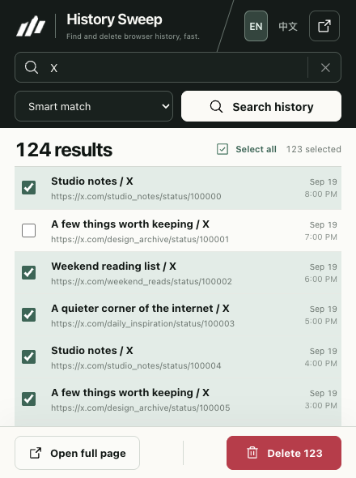
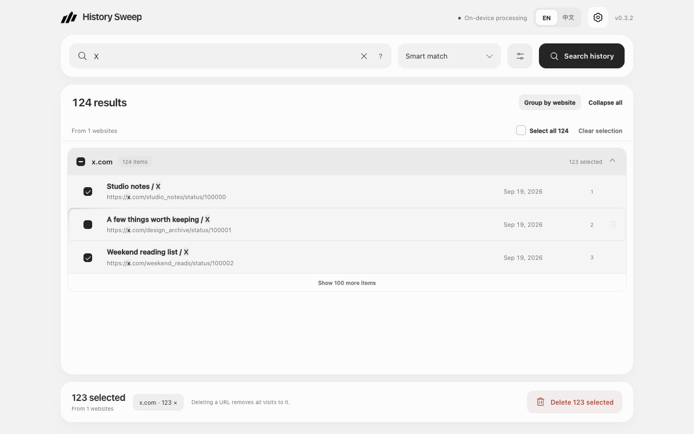

Find your starting point.
Search a site, domain, or keyword. Type X to find pages on x.com, without catching every stray letter x.
A SMALL TOOL FOR A LIGHTER BROWSER
Five hundred pages shouldn’t take five hundred clicks. Find what you want to leave behind. Clear it in one considered sweep.
FOR CHROME · ENGLISH / 简体中文 · NO ACCOUNT NEEDED

Less clicking. More breathing room.
01 / THE EVERYDAY RITUAL
Search a site, domain, or keyword. Type X to find pages on x.com, without catching every stray letter x.
Select all matching pages in one click. Uncheck anything worth keeping, right from the popup.
Review the count before deleting. Sweep checks the results afterward. Deletion continues when the extension window closes; keep Chrome running.
02 / ROOM TO FOCUS
A popup for a quick tidy.
A full workspace for a closer look.

Product views use illustrative data.
03 / PRIVATE BY DESIGN
History Sweep processes your history inside your browser. It doesn’t send it to us or anyone else. No accounts, no analytics, no access to your passwords or cookies.
Read the privacy note ↗A FEW SMALL QUESTIONS
No. Deleting a URL removes all of its visits. Review your selection before confirming. Chrome may sync history deletions across signed-in devices.
Only the history permission, to read and remove history. No website access permissions and no remotely hosted code.
Each scan reads up to 100,000 distinct URLs by last visit. A notice appears if that limit is reached; older records may be outside the results.
Not yet. You can download this pre-release and load it in developer mode. A store link will be added after review and approval.
A LITTLE SPACE GOES A LONG WAY
v0.3.1 · NOT YET LISTED ON THE CHROME WEB STORE
chrome://extensions in Chrome and enable Developer mode.